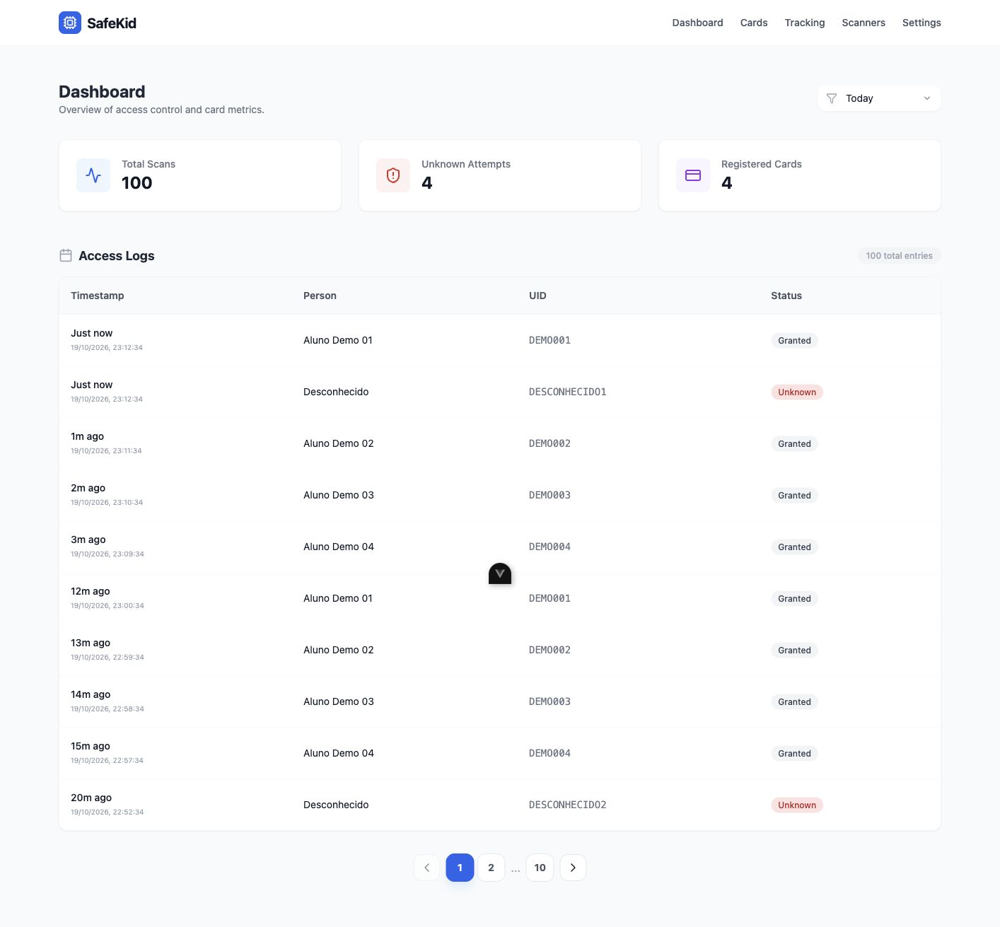
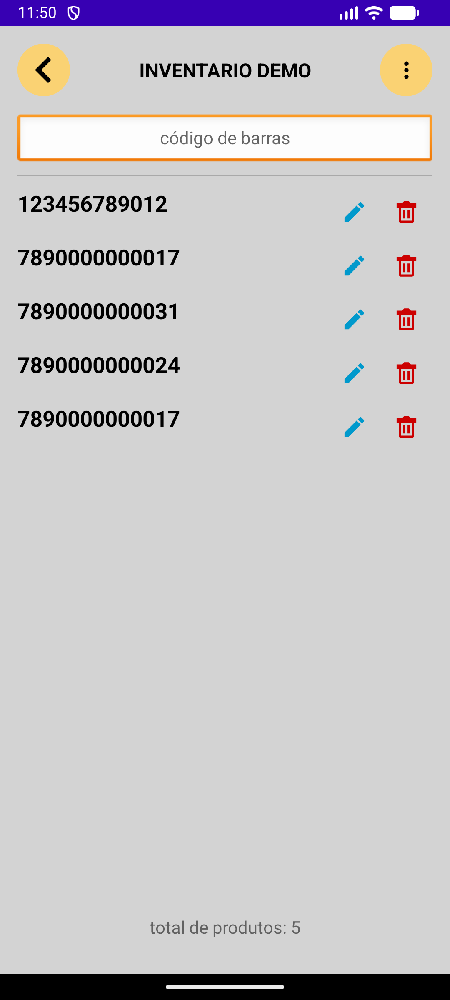

DESENVOLVIMENTO PROFISSIONAL
Mais visibilidade para quem acompanha
processos ambientais.
RECIFE, BRASIL / SOFTWARE DEVELOPER
Sou Marco Maciel. Desenvolvo aplicações web e Android e conecto essa prática à pesquisa em inteligência artificial e IoT.
Ciência da Computação · CESAR School
Construindo, aprendendo e fazendo perguntas.


01 / PROJETOS SELECIONADOS
Aplicações para acompanhar serviços,
organizar operações e explorar novas ideias.
Um recorte do meu trabalho, por dentro.
DESENVOLVIMENTO PROFISSIONAL
Mais visibilidade para quem acompanha
processos ambientais.
FREELANCE · DESENVOLVIDO EM DUPLA
Contagem de estoque na palma da mão,
mesmo sem conexão.
PESQUISA APLICADA · IoT
Da leitura de um crachá ao acompanhamento por zonas. Um protótipo que conecta dispositivos, dados e interface web.
Artigo aceito · MNR 2026Capturas das aplicações em execução com dados de demonstração. Os estudos detalham o contexto, minha participação e as decisões técnicas.
02 / UM POUCO DA TRAJETÓRIA
Sou desenvolvedor de software e graduando em Ciência da Computação na CESAR School, em Recife.
Gosto de acompanhar o caminho completo de uma solução: entender a rotina de quem usa, desenvolver a aplicação e melhorar o que faz diferença no dia a dia.
Selecionado para a dupla diplomação CESAR School–IPB, com período em Engenharia Informática previsto em Portugal durante 2027.
EXPERIÊNCIA NA PRÁTICA
Desenvolvedor de software · Autônomo
Construção e evolução do portal de clientes: empresas, projetos, processos, documentos e prazos. Desenvolvimento de uma versão Android em Kotlin, em testes com clientes.
Estágio em desenvolvimento de software
Desenvolvimento full-stack com React e PHP/Laravel e de uma versão Android em React Native. Otimização das consultas, trazendo do banco apenas os dados necessários.
Desenvolvedor freelance
Aplicativo Android para coletores de estoque, desenvolvido e entregue em dupla. Participação em todas as frentes, da interface à persistência e exportação dos dados.
React · TypeScript · PHP / Laravel · Kotlin · React Native · Python · SQL · Git
03 / PESQUISA & COMPARTILHAMENTO
Participei de uma pesquisa sobre o uso autônomo de IA no aprendizado inicial de programação, com um curso presencial de Python, avaliação prática sem IA e questionários de percepção.
Workshop sobre uso de IA e resultados da pesquisa para 30 jovens, com atividade prática.
Coautor de artigo aceito para a MNR 2026, com apresentação prevista para o fim de novembro.
Atuação como bolsista no projeto Conversor Automático de Código (CAC).
Continuar construindo software e aprofundar a trajetória de pesquisa, com interesse em mestrado e doutorado.
ABERTO A NOVAS CONVERSAS
Desenvolvimento full-stack, Android ou pesquisa?
Vamos falar sobre o que podemos construir juntos.